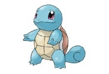

Pokemon introduction
(胖丁)

Cute Charm
Competitive
Friend Guard(DW)
(喵喵)

Pickup
Technician
Unnerve (DW)
(可達鴨)

Damp
Cloud Nine
Swift Swim (DW)
(小水龜)
Torrent
Rain Dish (DW)
| Pokemon Name | Picture | Type | Species | Abilities | Description |
|---|---|---|---|---|---|
| Jigglypuff (胖丁) |
|
Fairy | Balloon Pokémon |
Cute Charm Competitive Friend Guard(DW) |
Jigglypuff (Japanese: プリン Purin) is a dual-type Normal/Fairy Pokémon introduced in Generation I. |
| Meowth (喵喵) |
|
Normal | Scratch Cat Pokémon |
Pickup Technician Unnerve (DW) |
Meowth (Japanese: ニャース Nyarth) is a Normal-type Pokémon introduced in Generation I. |
| Psyduck (可達鴨) |
|
Water | Scratch Cat Pokémon |
Damp Cloud Nine Swift Swim (DW) |
Psyduck (Japanese: コダック Koduck) is a Water-type Pokémon introduced in Generation I. |
| Squirtle (小水龜) |
 | Water | Tiny Turtle Pokémon |
Torrent Rain Dish (DW) |
Squirtle (Japanese: ゼニガメ Zenigame) is a Water-type Pokémon introduced in Generation I. |
| Reference：FANDOM |